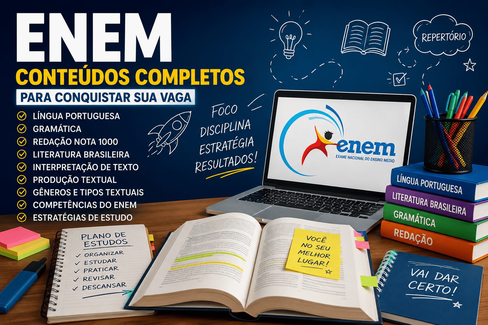

ENEM: conteúdos completos para conquistar sua vaga na universidade
O Exame Nacional do Ensino Médio (ENEM) é a principal porta
de entrada para universidades públicas e privadas em todo o Brasil.
Além de possibilitar o acesso por meio do SISU,
o exame também é utilizado em programas como PROUNI
e FIES, tornando-se uma das avaliações mais importantes
para estudantes que desejam ingressar no ensino superior.
Nesta página você encontrará uma seleção de conteúdos desenvolvidos
especialmente para quem está se preparando para o ENEM.
Os materiais abrangem os principais assuntos de
Língua Portuguesa,
Gramática,
Produção Textual,
Interpretação de Texto,
Literatura Brasileira,
além de técnicas de redação, estratégias de estudo e conteúdos fundamentais
para alcançar uma excelente pontuação.
Todos os conteúdos foram elaborados com linguagem clara,
explicações detalhadas, exemplos comentados e exercícios,
auxiliando estudantes de diferentes níveis de preparação,
desde quem está iniciando os estudos até aqueles que desejam revisar
os principais conteúdos antes da prova.

O que você encontrará nesta seção
Língua Portuguesa;
Gramática aplicada ao ENEM;
Produção Textual;
Redação Nota 1000;
Interpretação de Texto;
Literatura Brasileira;
Gêneros Textuais;
Tipologias Textuais;
Figuras de Linguagem;
Funções da Linguagem;
Fonética e Fonologia;
Morfologia;
Sintaxe;
Semântica;
Coesão e Coerência;
Intertextualidade;
Competências da Redação do ENEM;
Estratégias de leitura;
Dicas de estudo;
Questões comentadas.
Como estudar para o ENEM
A preparação para o ENEM exige planejamento, organização e constância.
Além do domínio dos conteúdos gramaticais, o estudante precisa desenvolver
competências de leitura, interpretação, argumentação e escrita,
habilidades avaliadas tanto nas questões objetivas quanto na redação.
Uma estratégia eficiente consiste em estudar os conteúdos previstos na
Matriz de Referência do ENEM, resolver provas anteriores,
identificar os assuntos mais recorrentes,
realizar revisões periódicas e produzir redações com frequência.
Também é importante ampliar o repertório sociocultural por meio da leitura
de livros, jornais, artigos científicos, reportagens e obras literárias.
O objetivo desta seção é reunir, em um único lugar,
os principais conteúdos de Língua Portuguesa e Redação do ENEM,
facilitando sua revisão e permitindo que você encontre rapidamente
os materiais necessários durante toda a preparação.
Principais áreas de Língua Portuguesa cobradas no ENEM
As provas de Linguagens do ENEM valorizam muito mais a interpretação,
a reflexão e a aplicação dos conhecimentos linguísticos do que a simples
memorização de regras gramaticais.
Por isso, conhecer os conteúdos mais recorrentes é fundamental
para alcançar uma boa pontuação.
Compreensão e interpretação de textos;
Gêneros textuais;
Tipologias textuais;
Coesão e coerência;
Progressão temática;
Intertextualidade;
Semântica;
Variação linguística;
Fonética e Fonologia;
Morfologia;
Classes gramaticais;
Sintaxe da oração e do período;
Concordância nominal e verbal;
Regência;
Crase;
Pontuação;
Figuras de linguagem;
Funções da linguagem;
Literatura brasileira;
Modernismo;
Produção textual.
Organização dos conteúdos
Os conteúdos do Portal Educacional Mestre Kira foram organizados por áreas
de conhecimento para facilitar sua preparação.
Cada assunto possui uma página própria com teoria,
exemplos comentados, dicas de interpretação e materiais complementares,
permitindo uma revisão eficiente ao longo do ano.
O Mestre Kira reúne conteúdos elaborados com foco na aprendizagem,
priorizando explicações claras, exemplos comentados e organização didática. O objetivo
é facilitar a compreensão dos assuntos mais importantes cobrados no ENEM,
permitindo que o estudante desenvolva autonomia e confiança durante sua preparação.
Além dos materiais específicos para o ENEM, o portal disponibiliza
conteúdos aprofundados de Língua Portuguesa, Literatura, Produção Textual e Redação,
formando uma base sólida para estudos de longo prazo e para outros processos seletivos.
Novos conteúdos são publicados periodicamente, acompanhando as necessidades dos
estudantes e contribuindo para uma preparação completa.
Sobre o autor
Os conteúdos desta seção são produzidos por
Leildo Gonçalves,
professor de Língua Portuguesa, pesquisador e criador do
Mestre Kira,
projeto educacional voltado ao ensino de linguagem,
redação, literatura e tecnologia aplicada à educação.